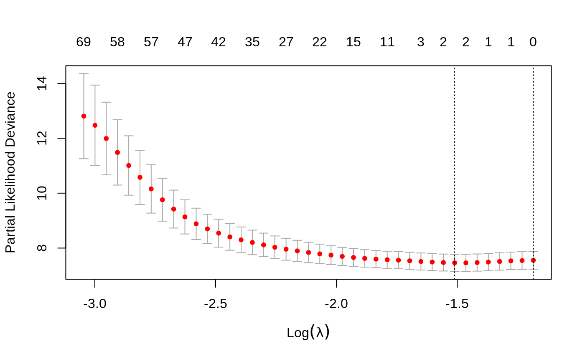

Coxnet.RmdWe will give a short tutorial on using coxnet. Coxnet is a function which fits the Cox Model regularized by an elastic net penalty. It is used for underdetermined (or nearly underdetermined systems) and chooses a small number of covariates to include in the model. Because the Cox Model is rarely used for actual prediction, we will rather focus on finding and interpretating an appropriate model. We give a simple example of how to format data and run the Cox Model in glmnet with cross validation.
Further details may be found in Simon et al. (2011), Tibshirani et al. (2012) and Simon, Friedman, and Hastie (2013).
We first load our data and set up the response. In this case \(x\) must be an \(n\) by \(p\) matrix of covariate values — each row corresponds to a patient and each column a covariate. \(y\) is an \(n\) length vector of failure/censoring times, and status is an \(n\) length vector with each entry, a \(1\) or a \(0\), indicating whether the corresponding entry in \(y\) is indicative of a failure time or right censoring time (\(1\) for failure, \(0\) for censoring)
## Loading required package: Matrix## Loaded glmnet 3.0-1We then call our functions to fit with the lasso penalty (\(\alpha=1\)), and cross validate. We set maxit = 1000 (increasing the maximum number of iterations to \(1000\)) because our data is relatively high dimensional, so more iterations are needed for convergence. In practice, the function will spit out an error if convergence isn’t reached by the maximum number of iterations.
cv.fit <- cv.glmnet(patient.data$x, Surv(patient.data$time, patient.data$status), family="cox", maxit = 1000)## Warning: from glmnet Fortran code (error code -42); Convergence for 42th lambda
## value not reached after maxit=1000 iterations; solutions for larger lambdas
## returned## Warning: from glmnet Fortran code (error code -37); Convergence for 37th lambda
## value not reached after maxit=1000 iterations; solutions for larger lambdas
## returned## Warning: from glmnet Fortran code (error code -40); Convergence for 40th lambda
## value not reached after maxit=1000 iterations; solutions for larger lambdas
## returned## Warning: from glmnet Fortran code (error code -43); Convergence for 43th lambda
## value not reached after maxit=1000 iterations; solutions for larger lambdas
## returned## Warning: from glmnet Fortran code (error code -39); Convergence for 39th lambda
## value not reached after maxit=1000 iterations; solutions for larger lambdas
## returned## Warning: from glmnet Fortran code (error code -41); Convergence for 41th lambda
## value not reached after maxit=1000 iterations; solutions for larger lambdas
## returned
## Warning: from glmnet Fortran code (error code -41); Convergence for 41th lambda
## value not reached after maxit=1000 iterations; solutions for larger lambdas
## returned## Warning: from glmnet Fortran code (error code -45); Convergence for 45th lambda
## value not reached after maxit=1000 iterations; solutions for larger lambdas
## returned## Warning: from glmnet Fortran code (error code -42); Convergence for 42th lambda
## value not reached after maxit=1000 iterations; solutions for larger lambdas
## returned## Warning: from glmnet Fortran code (error code -43); Convergence for 43th lambda
## value not reached after maxit=1000 iterations; solutions for larger lambdas
## returned
## Warning: from glmnet Fortran code (error code -43); Convergence for 43th lambda
## value not reached after maxit=1000 iterations; solutions for larger lambdas
## returnedfit <- glmnet(patient.data$x, Surv(patient.data$time,patient.data$status), family = "cox", maxit = 1000)## Warning: from glmnet Fortran code (error code -42); Convergence for 42th lambda
## value not reached after maxit=1000 iterations; solutions for larger lambdas
## returnedThe Surv function packages the survival data into the form expected by glmnet. Once fit, we can view the optimal \(\lambda\) value and a cross validated error plot to help evaluate our model.

## [1] 0.2207638The left vertical line in our plot shows us where the CV-error curve hits its minimum. The right vertical line shows us the most regularized model with CV-error within\(1\)standard deviation of the minimum. In this case, we see that the minimum was achieved by a fairly regularized model, however the right line indicates that the null model (no coefficients included) is within\(1\)sd of the minimum. This might lead us to believe that in actuality the covariates are not explaining any variability. For the time being we will concern ourselves with the minimum CV-error model. We can check which covariates our model chose to be active, and see the coefficients of those covariates.
Coefficients <- coef(fit, s = cv.fit$lambda.min)
Active.Index <- which(Coefficients != 0)
Active.Coefficients <- Coefficients[Active.Index]coef(fit, s = cv.fit\$lambda.min) returns the \(p\) length coefficient vector of the solution corresponding to \(\lambda =\)cv.fit$lambda.min.
## [1] 80 394## [1] 0.36589736 0.07869734We see that our optimal model chose 2 active covariates (\(X80\) and \(X394\)) each with a small positive effect on hazard.
Simon, Noah, Jerome Friedman, and Trevor Hastie. 2013. “A Blockwise Descent Algorithm for Group-Penalized Multiresponse and Multinomial Regression.”
Simon, Noah, Jerome Friedman, Trevor Hastie, and Robert Tibshirani. 2011. “Regularization Paths for Cox’s Proportional Hazards Model via Coordinate Descent.” Journal of Statistical Software, Articles 39 (5): 1–13. https://doi.org/10.18637/jss.v039.i05.
Tibshirani, Robert, Jacob Bien, Jerome Friedman, Trevor Hastie, Noah Simon, Jonathan Taylor, and Ryan Tibshirani. 2012. “Strong Rules for Discarding Predictors in Lasso-Type Problems.” Journal of the Royal Statistical Society: Series B (Statistical Methodology) 74 (2): 245–66. https://doi.org/10.1111/j.1467-9868.2011.01004.x.